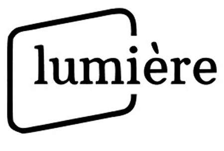
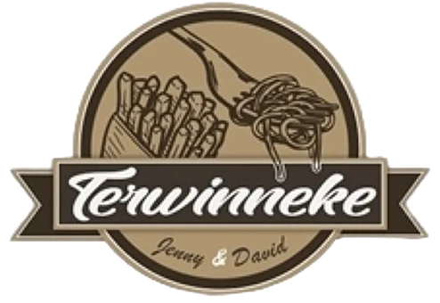
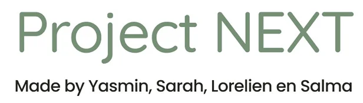

Lumière cinema
Een interactieve cinema-app met focus op UX laws, dark mode en variabelen.
Bekijk projectWelkom op mijn projectenoverzicht!
Hier vind je een selectie van mijn werk binnen UX/UI-design, user research en interactieve prototypes. Van toegankelijke websites en mobiele apps tot branding voor echte klanten en creatieve Figma-experimenten: klik op een project om het volledige ontwerpproces, mijn keuzes en het eindresultaat te ontdekken.

Een interactieve cinema-app met focus op UX laws, dark mode en variabelen.
Bekijk project
Een overzichtelijk website-redesign en WordPress-concept voor een Mechelse jazzclub.
Bekijk project
Een toegankelijke mobiele website ontworpen volgens de WCAG-richtlijnen.
Bekijk project
Een creatieve verzameling van zelfgemaakte illustraties, iconen en animaties.
Bekijk project
Een warme branding en website voor een organisatie die jongeren ondersteunt.
Bekijk project